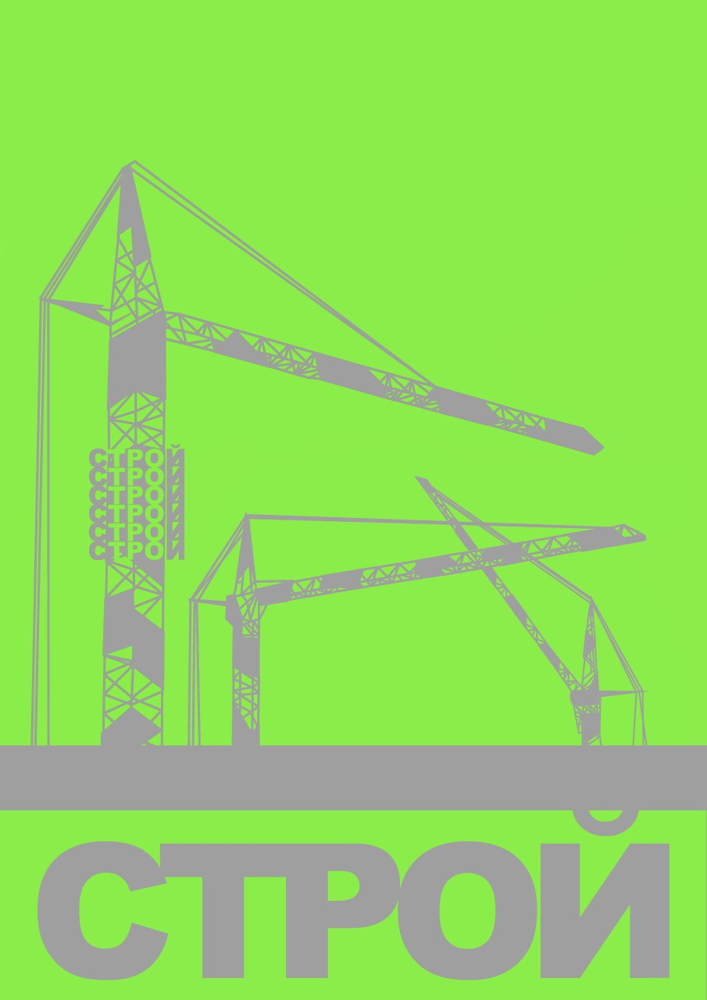
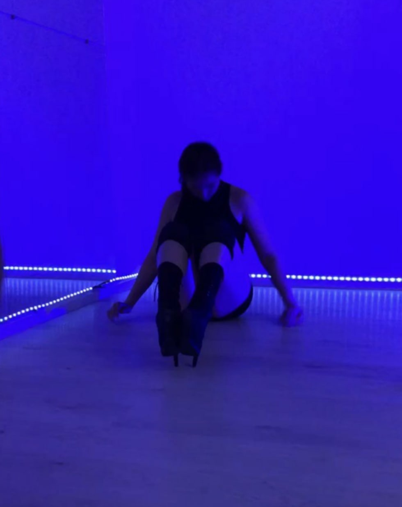
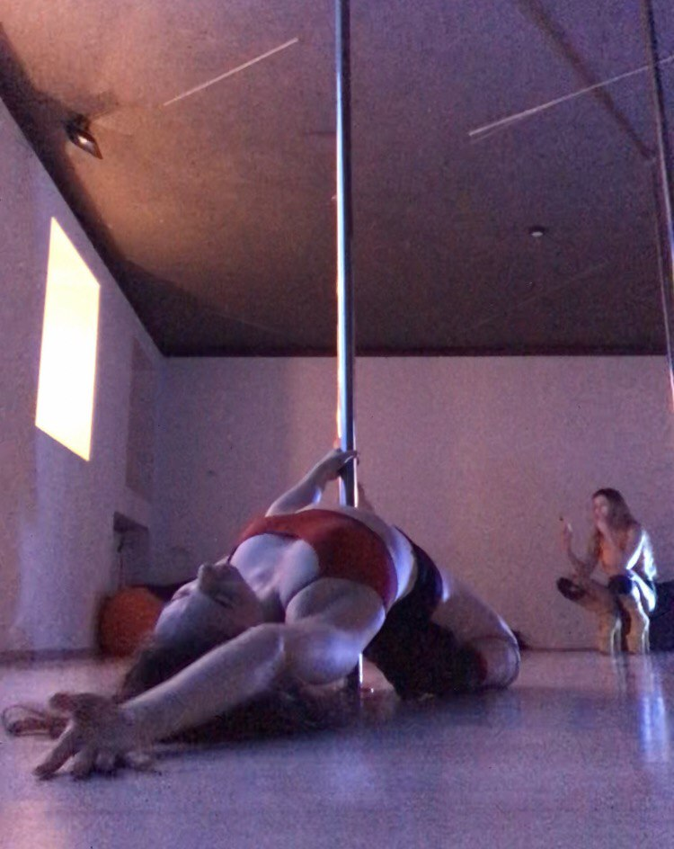
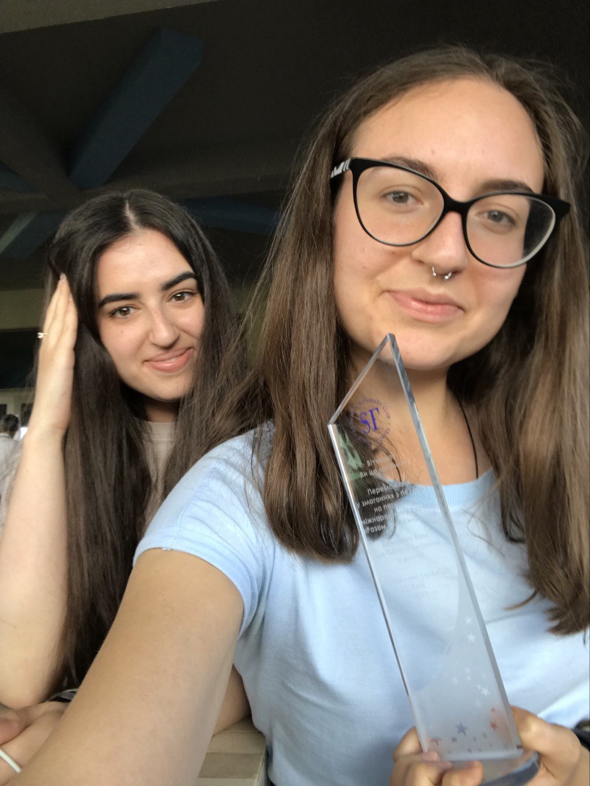

Fun stuff
My name is Mariia Atamaniuk. I am a professional analyst with 5+ years of experience in market research, product and customer analytics, as well as in investment projects.
Intro
Experienced in SQL (PostgreSQL), R (RStudio), and Tableau…
Wait. Are you bored already? I know. Sorry for that. This page is for things that I will not include in my resume.
First serious assignment
I was 18, when I had my first serious job at the British-Ukrainian Chamber of Commerce. After only three months of working there I was appointed to be a main organizer of the dinner for the President of Ukraine Petro Poroshenko in 2018 with 20 biggest investors in Ukraine in the awesome Armourer’s Hall.
If I were my boss, I would hesitate to appoint a 18-year old intern to organize one of the most important events at the organization, but I did well! Look!
Investment talks
Besides organizing conferences, I was also attending them - to meet new people and having fun arranging new business. During past couple of years, I have attended more than 100 conferences, workshops, webinars, and networking events.
But to be honest, I am there only for food.
Whisperer
My friend has a YouTube channel with ASMR content, and I participated in two of her videos. Together, these two videos gathered about half a million views.
I am truly flattered that people enjoy watching me enjoying tingles!

Jokes accountancy
As the classic has once said, “life is a joke, and I am laughing, even though I did not understand the humour”.
Two years ago, I launched a private telegram channel where I wrote down jokes that I heard around me: mostly from my friends. So far, there are 12,635 jokes and I want to stop.
But I can’t.

Mess management
With a group of friends, we once decided to organize a techno festival on Troeshchyna, in the abandoned church at the edge of Kyiv. We agreed with a local security guy for a box of vodka that he allows us to do this.
Spoiler: it didn’t happen. Person responsible for DJs went crazy (literally) and dropped out.
The venue was amazing for such festival.

Metal friend
I had bunch of different hobbies in my life, i.e. piano, web-design, chess, sports. I loved working out at the gym, but it became pretty annoying to repeat the same exercises again and again. I wanted to transform sport into art. And - started pole dancing.
If you are considering doing it as well, please note that as a byproduct you may receive nasty comments in your DM.


Stolen cake
Once I solicited my friend to pretend that he had a birthday to get a free cake from a cafe. They brought us cheesecake. It was very tasty, thank you for asking. And no, we do not regret it.
And by the way, this is my photo on film. Hashtag 35 mm.

Biggest achievement in life
Sometimes, when I have a bad mood, I start thinking about my non-existing achievements in life and become sad. But then I recall that last year a team of my sister and me took a first prize in pétanque competition and won over skilled Armenians who spend each weekend in the golf club.
If you have no idea what pétanque is - don’t ask me. I don’t know too.

Outro
Life is a beautiful mess. Let’s live it together!
Hire me and get unlimited access to my laughs at your jokes!